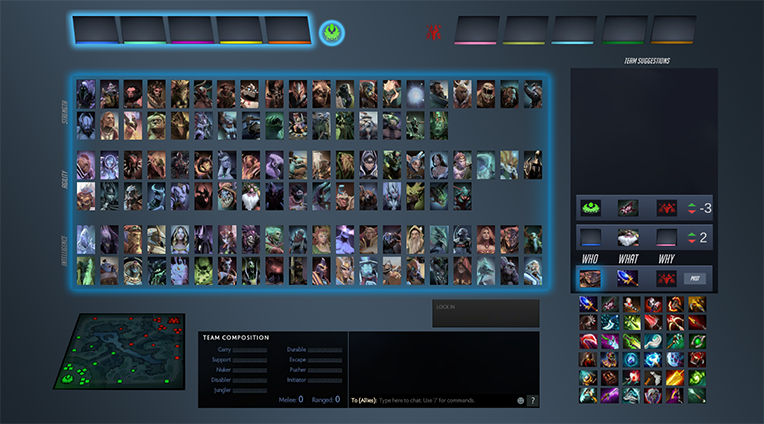

About.Me: Hunter McGregor
I am a creative and enthusiastic computer scientist who's excited to start a career within the field.
At a very early age I was given my own computer due to the fear that my constant tinkering would break our family's computer. Throughout the years my curiosity continued to be illuminated by messing around with anything that had an interface. I was originally studying Environmental Science but the class content often left me unhappy and unexcited. After a particularily rough day I came home and buried myself into an Oblivion mod I was creating and realized that someone might actually pay me for this type of work. Sometimes it takes a few tries before you realize that your passion is actually a job.
// Sol
The goal of the Sol project was to make an emergant open world sandbox. The game had an array of features: town rebuilding, farming, crafting, harvesting, exploration, and combat. I worked as the primary developer for the inventory system and all interactions involving an item. This included: UI design, harvesting, farming, looting, crafting, equipment, resources, item balancing and town rebuilding. This project gave me experience working in a medium sized team and using the Agile software development process. Programmed within the Unity Engine.
// DotA 2 UI Enhance
This was a term project for the class Computer Science 481, Human Computer Interaction. The goal of our team was to add features to make character selection in moba games a more socially positive experience and redesign the interface. The redesigned interface gives players the ability to communicate strategies at an abstracted level meant to reduce toxic behavior and overcome language barriers. This required extensive user testing through-out the iterative design process. The low and Medium fidelity prototypes are shown below. The medium fidelity prototype was made using the Unity Engine.


// 4M Management
I was commissioned by 4M Management to design a website for itself and it's subsidiary companies: 4M Account Services and 4M Aerial. The Website was designed using HTML, CSS, and Javascript and is fully mobile friendly. I am co-founder, pilot, and web technician of 4M Aerial and have been the technicial assistant of 4M Management for 8 years. It can be seen here: www.4mmanagement.com
// Caleb's Pit
Caleb's Pit featured a fully functioning A* pathing AI based on a dynamically changing heat map unique to each enemy type while being light-weight enough to support 200+ units simultaneously pathing without a queue system. As each monster is slain it drops it's corresponding elemental terrain on the ground causing an evolving field of play which provided a unique experience each play while also featuring 5 elemental power-ups, 2 character power-ups, and 3 potions which could dramatically change the play experience.